Plotting with Makie
NMRTools provides a Makie extension with nmrplot and nmrplot! for interactive or publication-quality figures. Load NMRTools and a Makie backend:
using NMRTools
using CairoMakie # static figures; use GLMakie for interactiveSeveral behaviours differ from plain Makie to match NMR conventions:
- Titles come from the spectrum's label (set from the title file on load). Pass
title=""to suppress ortitle="My title"to override. - Axes are reversed (high ppm on the left/bottom) and labelled automatically from dimension metadata.
xlims/ylimsare passed directly tonmrplotrather than callingxlims!(ax, ...)afterwards. For 1D plots the y-axis rescales to fit the displayed region.- Contour levels for 2D spectra are set automatically from the noise level (starting at 5σ, geometric spacing of 1.7). The keyboard can be used to raise or lower them interactively (see below).
- Legends are disabled by default. When enabled, entries are named automatically from spectrum labels.
1D spectra
fig = nmrplot(exampledata("1D_1H")) Downloading artifact: 1D_1H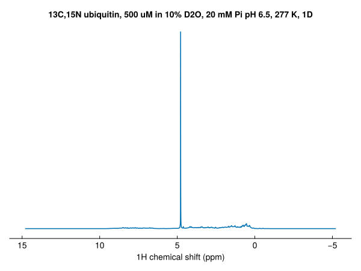
Set the plot range with xlims — the y-axis rescales to fit the visible region:
fig = nmrplot(exampledata("1D_1H"), xlims=(-1, 4.5))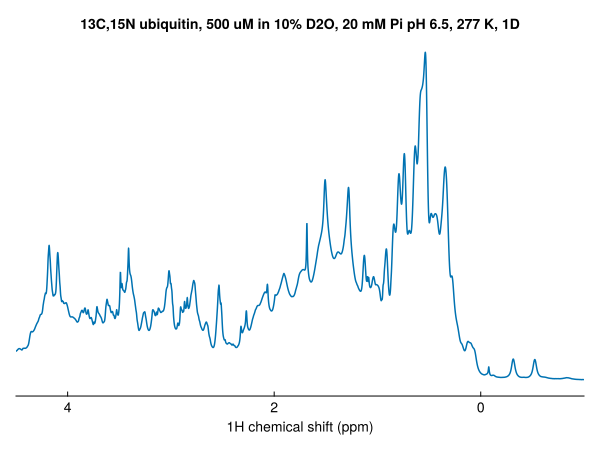
Overlay additional spectra with nmrplot!:
nmrplot!(fig, exampledata("1D_1H") / 2)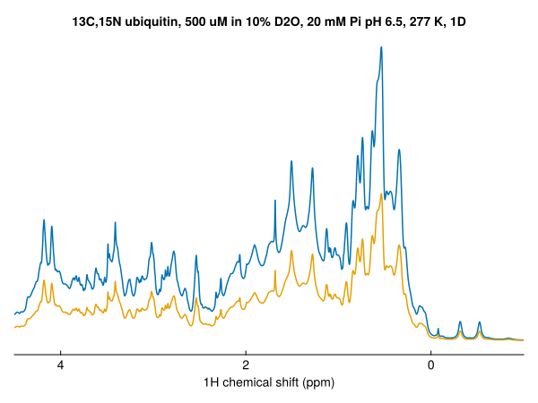
1D spectra can be stacked by passing the argument vstack=true, or vstack=X where X controls the spacing:
fig = Figure()
nmrplot(fig[1,1], exampledata("1D_19F_titration"), xlims=(-121.8,-125.2), vstack=true, title="vstack=true")
nmrplot(fig[1,2], exampledata("1D_19F_titration"), xlims=(-121.8,-125.2), vstack=2, title="vstack=2")
nmrplot(fig[1,3], exampledata("1D_19F_titration"), xlims=(-121.8,-125.2), vstack=10, title="vstack=10") Downloading artifact: 1D_19F_titration
2D spectra
spec2d = exampledata("2D_HN")
fig = nmrplot(spec2d)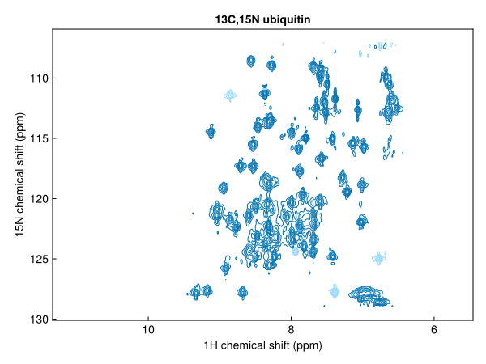
Add 1D projections along either axis:
fig = nmrplot(exampledata("2D_HN"), xprojection=true, yprojection=true)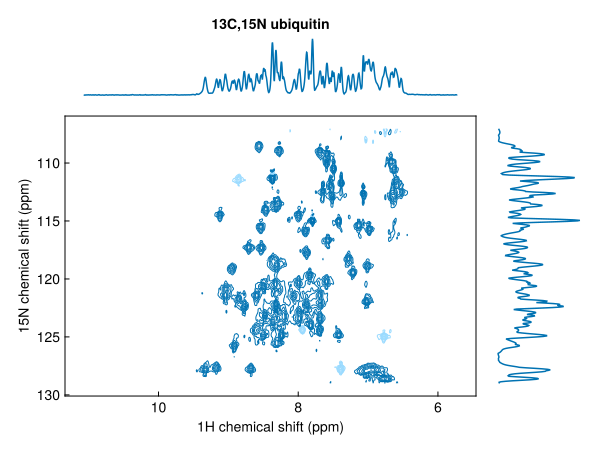
Plot a series of spectra in one call; colours cycle automatically and a legend can be added:
fig = nmrplot(exampledata("2D_HN_titration"), legend=:lt)
Or add spectra one-by-one with nmrplot!:
dats = exampledata("1D_19F_titration")
fig, ax = nmrplot(dats[1], title="", xlims=(-120, -128))
nmrplot!(fig, dats[5])
nmrplot!(fig, dats[10])
axislegend(ax)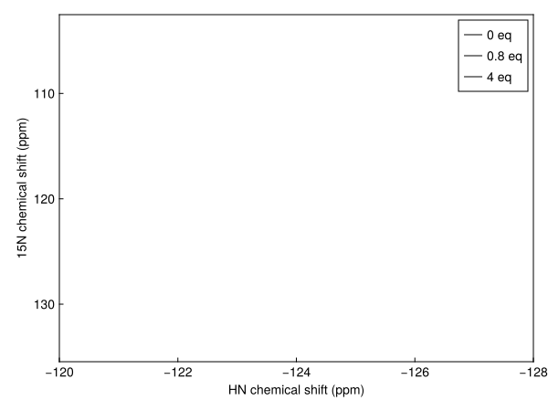
Contour colours and levels
Negative contours are shown by default as a faded version of the positive colour. Disable them or set a different colour:
fig = nmrplot(spec2d; negcontours=false)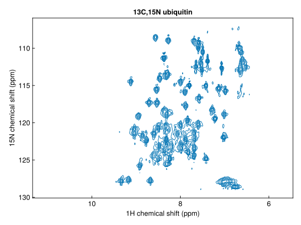
fig = nmrplot(spec2d; negcolor=:red)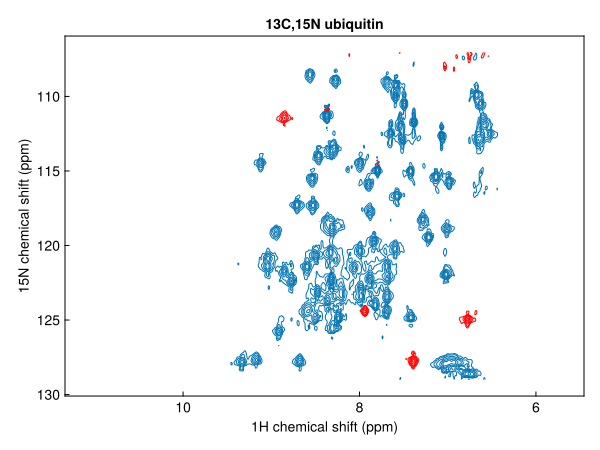
Pass levels as an integer to change the number of contour levels, or as a vector of absolute values to use explicit levels:
nmrplot(spec2d; levels=8) # 8 geometric levels from 5σ
nmrplot(spec2d; levels=[2e6, 4e6, 8e6]) # explicit positive levelsspacing sets the geometric ratio between levels (default 1.7):
nmrplot(spec2d; spacing=2.0, levels=10)Keyboard navigation (GLMakie)
In GLMakie, press ↑ / ↓ to raise or lower all contour levels in the figure by one step (multiplied/divided by spacing). The key repeats while held. This works for any spectrum added with nmrplot or nmrplot!.
Pseudo-2D spectra
Pseudo-2D spectra (one frequency + one non-frequency dimension) support three display styles via the style keyword:
style | Description |
|---|---|
:heatmap | colour map (default) |
:flat | overlaid 1D slices |
:waterfall | 3D slice view |
diffusiondata = exampledata("pseudo2D_XSTE")
diffusiondata = setgradientlist(diffusiondata, LinRange(0.02, 0.98, 10))
fig = nmrplot(diffusiondata, xlims=(7, 9.5))┌ Warning: a maximum gradient strength of 0.55 T m⁻¹ is being assumed - this is roughly correct for modern Bruker systems but calibration is recommended
└ @ NMRTools.NMRBase ~/work/NMRTools.jl/NMRTools.jl/src/NMRBase/nmrdata.jl:306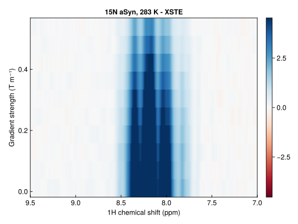
fig = nmrplot(diffusiondata, xlims=(7, 9.5), style=:flat)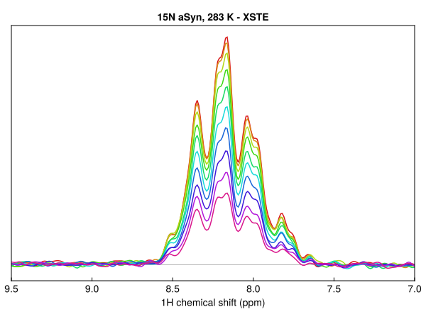
fig = nmrplot(diffusiondata, xlims=(7, 9.5), style=:waterfall)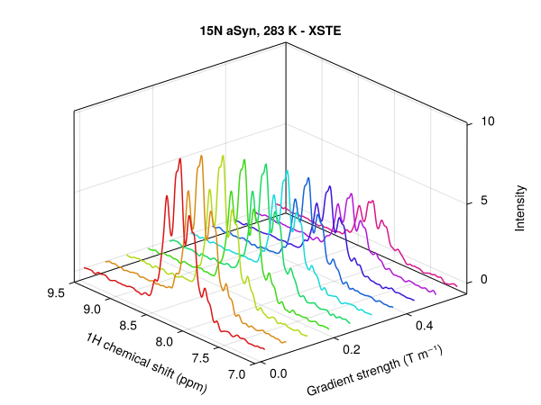
Saving figures
Makie figures can be saved using GLMakie or CairoMakie as png files:
save("spectrum.png", fig)
save("spectrum.png", fig; px_per_unit=2) # 2× resolutionTo save figures as vector graphics (pdf or svg), switch to CairoMakie:
using CairoMakie
save("spectrum.svg", fig) # vector graphics
save("spectrum.pdf", fig)Layout and composition
nmrplot accepts a GridPosition to place spectra into a shared figure alongside other Makie plots:
fig = Figure()
nmrplot(fig[1, 1], exampledata("1D_1H"); title="", xlims=(-1, 4.5))
nmrplot(fig[1, 2], exampledata("2D_HN"); title="", xlims=(6, 10))
scatter(fig[2, :], randn(100))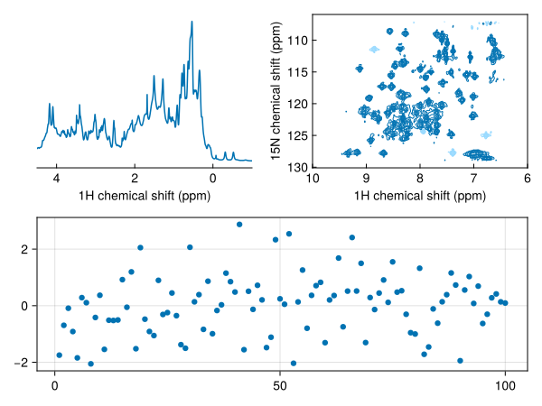
Axis properties can be customised after the fact via the returned ax handle, or passed up-front via the axis keyword:
fig, ax, plt = nmrplot(spec)
ax.title[] = "My spectrum"
# equivalently:
fig = nmrplot(spec; axis=(; title="My spectrum"))Animations
The standard Makie record function works directly with nmrplot!. This example cycles through a titration series and saves a GIF:
spectra = exampledata("2D_HN_titration")
ref = spectra[1]
fig, ax, _ = nmrplot(spectra[1]; normalize=ref, xlims=(6, 10.5))
record(fig, "makie-titration.gif", spectra; framerate=4) do s
empty!(ax)
ax.title[] = label(s)
nmrplot!(ax, s; normalize=ref)
end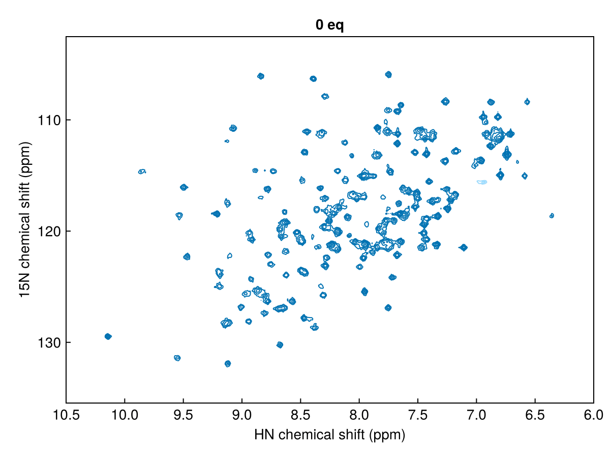
For interactive use with GLMakie, the same record approach works — or you can update the plot live by re-calling nmrplot! in response to user events.
Options reference
1D spectra
| Keyword | Default | Description |
|---|---|---|
title | spectrum label | Pass "" to suppress. |
color | auto (Wong palette) | Line colour. |
normalize | true | Scale by scans and receiver gain. Pass false to use raw intensities. |
vstack | false | Stack spectra vertically. Pass a number to scale the offset. |
xlims | auto | Chemical shift range (ppm). y-axis rescales to fit. |
legend | false | Legend position, e.g. :rt. Entries named from spectrum labels. |
axis | (;) | Extra Axis keyword arguments (escape hatch). |
2D spectra
| Keyword | Default | Description |
|---|---|---|
title | spectrum label | Pass "" to suppress. |
color / poscolor | auto (Wong palette) | Positive contour colour. |
negcontours | true | Show negative contours. |
negcolor | faded positive | Negative contour colour. |
normalize | true | Scale contour threshold by scans/gain. Pass a reference spectrum for cross-spectrum comparison. |
levels | 12 | Number of contour levels (Int), or a vector of explicit positive level values. |
spacing | 1.7 | Geometric ratio between successive contour levels; also the step size per ↑/↓ keypress. |
xprojection | nothing | 1D projection along the direct dimension. Pass true for max-projection or a 1D NMRData. |
yprojection | nothing | 1D projection along the indirect dimension. |
xlims | auto | Direct-dimension range (ppm). |
ylims | auto | Indirect-dimension range (ppm). |
legend | false | Legend position, e.g. :lt. Entries named from spectrum labels. |
axis | (;) | Extra Axis keyword arguments (escape hatch). |